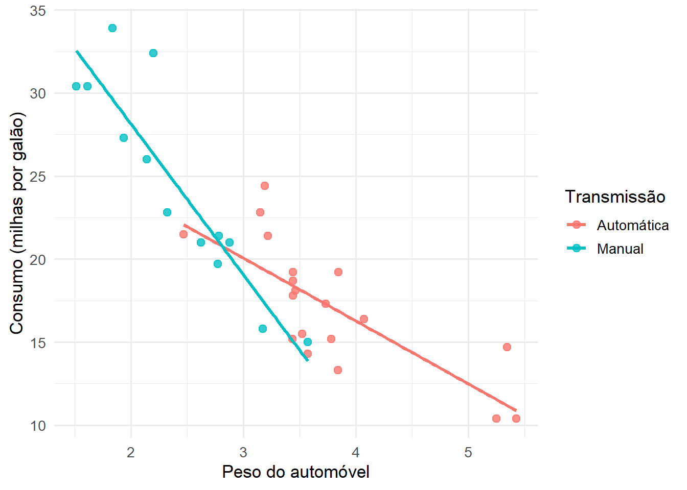
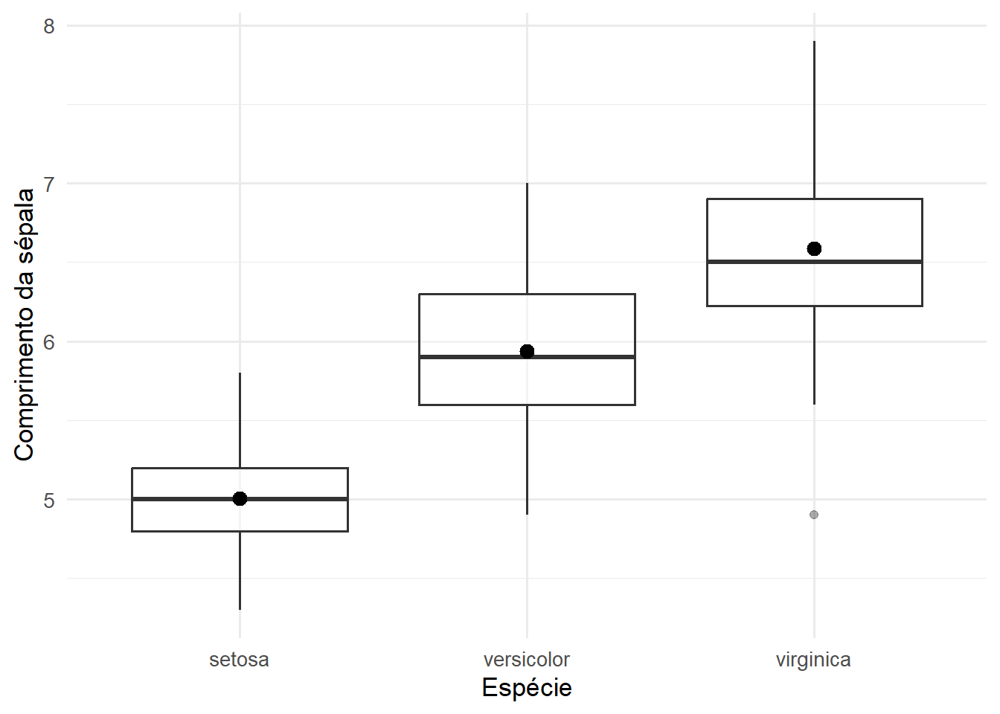
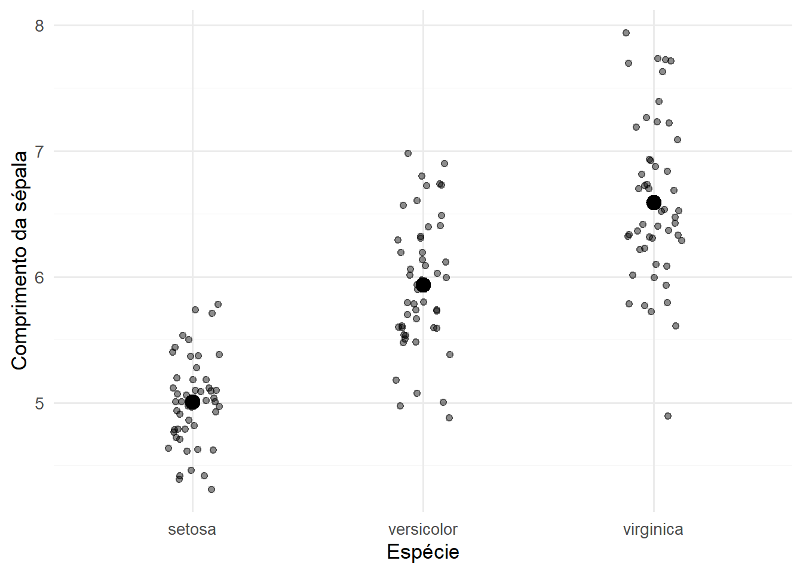
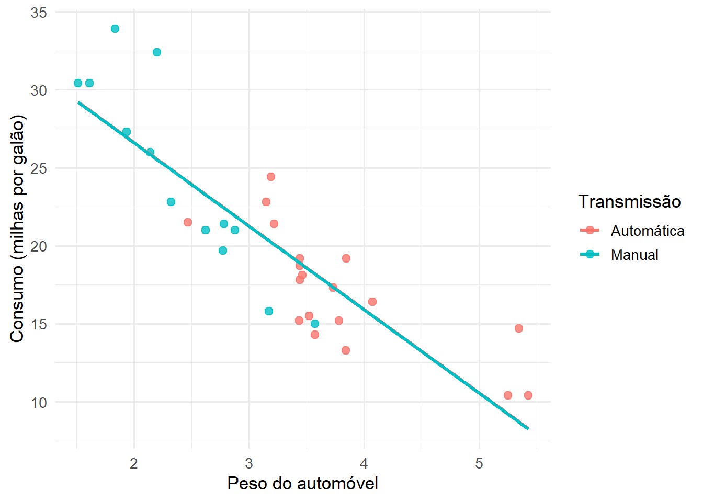
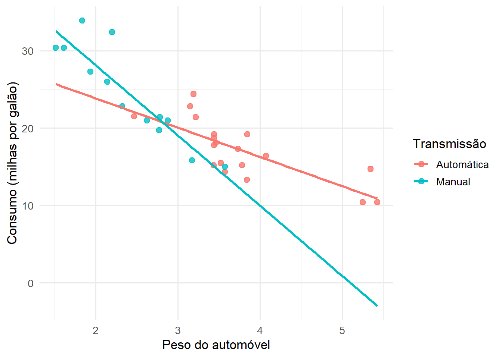

16 Variáveis Fictícias (Dummies)
16.1 Introdução e motivação
Até este ponto, o Modelo de Regressão Linear Múltipla foi apresentado principalmente a partir de variáveis explicativas quantitativas. Variáveis como renda, idade, temperatura, distância, tempo de estudo ou consumo de energia possuem uma escala numérica natural. Nesses casos, a interpretação dos coeficientes costuma ser feita em termos de variação média na resposta associada ao aumento de uma unidade na variável explicativa, mantendo as demais variáveis constantes.
Entretanto, em muitas aplicações, parte importante da explicação de um fenômeno não está em variáveis quantitativas, mas em características qualitativas. Indivíduos podem pertencer a grupos distintos; empresas podem atuar em setores diferentes; produtos podem ser classificados em categorias; regiões podem apresentar condições estruturais diversas; tratamentos podem ser comparados com grupos de controle.
Essas informações são categóricas. Elas não possuem, em geral, uma escala numérica natural, mas podem alterar substancialmente a média da variável resposta. O objetivo das variáveis fictícias, também chamadas de dummies, é incorporar essas informações qualitativas ao modelo linear sem abandonar a estrutura do MRLM (Montgomery; Peck; Vining, 2021; Seber; Lee, 2003).
O ponto mais importante é que o modelo não muda em sua essência. Continuamos trabalhando com
\[ \mathbf{Y} = \mathbf{X}\boldsymbol{\beta} + \boldsymbol{\varepsilon}. \]
O que muda é a forma como algumas colunas da matriz \(\mathbf{X}\) são construídas. Em vez de conter apenas variáveis quantitativas, a matriz de planejamento passa a conter também colunas formadas por zeros e uns, indicando a presença ou ausência de determinada característica.
Essa observação é importante porque mostra que as variáveis fictícias não são um procedimento externo à regressão linear. Elas são parte natural da estrutura matricial do MRLM (Rencher; Christensen, 2012; Seber; Lee, 2003).
16.2 Variáveis indicadoras e interpretação básica
Uma variável fictícia é uma variável binária, isto é, uma variável que assume apenas os valores 0 e 1. O valor 1 indica a presença de uma característica, enquanto o valor 0 indica sua ausência.
Por exemplo, para representar se um automóvel possui transmissão automática ou manual, podemos definir
\[ D_i = \begin{cases} 1, & \text{se o automóvel possui transmissão automática},\\ 0, & \text{se o automóvel possui transmissão manual}. \end{cases} \]
A variável \(D_i\) funciona como um indicador. Ela não mede quantidade. Ela classifica a observação em um grupo.
Considere o modelo simples
\[ Y_i = \beta_0 + \beta_1D_i + \varepsilon_i. \]
Se \(D_i=0\), temos
\[ E(Y_i\mid D_i=0) = \beta_0. \]
Se \(D_i=1\), temos
\[ E(Y_i\mid D_i=1) = \beta_0+\beta_1. \]
Portanto, \(\beta_0\) representa a média do grupo de referência, isto é, o grupo codificado com \(D_i=0\). Já \(\beta_1\) representa a diferença média entre o grupo codificado com \(D_i=1\) e o grupo de referência (Greene, 2018; Montgomery; Peck; Vining, 2021).
Essa interpretação é direta, mas merece cuidado. O coeficiente de uma dummy não deve ser lido como “aumento de uma unidade na variável”, no mesmo sentido de uma variável quantitativa. Como a dummy só assume os valores 0 e 1, seu coeficiente representa uma mudança de grupo.
Quando há outras variáveis no modelo, a interpretação é condicional. No modelo
\[ Y_i = \beta_0 + \beta_1D_i + \beta_2x_i + \varepsilon_i, \]
o coeficiente \(\beta_1\) representa a diferença média entre os grupos, mantendo \(x_i\) constante.
Essa frase é essencial. Com variáveis fictícias, a expressão “mantendo as demais variáveis constantes” significa comparar indivíduos ou unidades que possuem o mesmo valor das variáveis quantitativas, mas pertencem a categorias diferentes.
Na representação gráfica, uma dummy binária sem interação desloca a reta para cima ou para baixo. As retas possuem a mesma inclinação, mas interceptos diferentes. Isso significa que o efeito da variável quantitativa é assumido igual nos dois grupos, enquanto a diferença entre os grupos aparece como uma diferença vertical.
16.3 Fatores com múltiplas categorias
Quando uma variável categórica possui apenas duas categorias, uma única dummy é suficiente. Entretanto, quando há \(k\) categorias, usamos \(k-1\) variáveis fictícias para evitar dependência linear perfeita entre as colunas da matriz de planejamento (Rencher; Christensen, 2012; Seber; Lee, 2003).
A categoria omitida torna-se a categoria de referência. Seus efeitos são incorporados ao intercepto.
Considere uma variável Região com cinco categorias: Norte, Nordeste, Centro-Oeste, Sudeste e Sul. Se a categoria Norte for escolhida como referência, podemos definir
\[ D_{NE,i} = \begin{cases} 1, & \text{se a região é Nordeste},\\ 0, & \text{caso contrário}, \end{cases} \]
\[ D_{CO,i} = \begin{cases} 1, & \text{se a região é Centro-Oeste},\\ 0, & \text{caso contrário}, \end{cases} \]
\[ D_{SE,i} = \begin{cases} 1, & \text{se a região é Sudeste},\\ 0, & \text{caso contrário}, \end{cases} \]
e
\[ D_{S,i} = \begin{cases} 1, & \text{se a região é Sul},\\ 0, & \text{caso contrário}. \end{cases} \]
O modelo fica
\[ Y_i = \beta_0 + \beta_1D_{NE,i} + \beta_2D_{CO,i} + \beta_3D_{SE,i} + \beta_4D_{S,i} + \varepsilon_i. \]
A média esperada para a região Norte é
\[ E(Y_i\mid Norte) = \beta_0. \]
Para as demais regiões, temos
\[ E(Y_i\mid Nordeste) = \beta_0+\beta_1, \]
\[ E(Y_i\mid Centro\text{-}Oeste) = \beta_0+\beta_2, \]
\[ E(Y_i\mid Sudeste) = \beta_0+\beta_3, \]
e
\[ E(Y_i\mid Sul) = \beta_0+\beta_4. \]
Assim, cada coeficiente compara uma categoria com a categoria de referência. Se \(\beta_3>0\), por exemplo, a média da região Sudeste é maior que a média da região Norte, considerando o modelo especificado. Se \(\beta_3<0\), a média da região Sudeste é menor que a média da região Norte.
A escolha da categoria de referência não altera o ajuste do modelo nem os valores ajustados. O que muda é a interpretação dos coeficientes. Por isso, a categoria de referência deve ser escolhida de modo a facilitar a interpretação substantiva.

A figura com múltiplas categorias ajuda a visualizar que o modelo com dummies permite comparar médias entre grupos. A diferença entre categorias aparece como diferença vertical entre médias ajustadas.
16.4 A armadilha das dummies e o posto da matriz
Uma questão importante surge quando tentamos incluir uma dummy para cada categoria da variável qualitativa.
Se uma variável possui \(k\) categorias e criamos \(k\) dummies, então, para cada observação,
\[ D_{1i} + D_{2i} + \cdots + D_{ki} = 1. \]
Mas, se o modelo já possui intercepto, a coluna de intercepto também é uma coluna de uns. Assim, uma das colunas da matriz de dummies pode ser escrita como combinação linear das demais e da coluna de intercepto.
Isso gera dependência linear exata entre colunas da matriz \(\mathbf{X}\). Em termos matriciais, a matriz \(\mathbf{X}\) perde posto completo.
Quando isso ocorre,
\[ \mathbf{X}^\top\mathbf{X} \]
torna-se singular, e a solução clássica
\[ \hat{\boldsymbol{\beta}} = (\mathbf{X}^\top\mathbf{X})^{-1} \mathbf{X}^\top\mathbf{Y} \]
não está definida.
Esse problema é conhecido como armadilha das variáveis fictícias, ou dummy variable trap. A solução usual é omitir uma categoria, que passa a ser a referência (Greene, 2018; Montgomery; Peck; Vining, 2021).
Essa discussão mostra que o uso de dummies está diretamente ligado à estrutura matricial do MRLM. Não se trata apenas de uma escolha de codificação. Trata-se de garantir identificabilidade dos parâmetros e posto completo da matriz de planejamento.
16.5 Relação com ANOVA
Um modelo de regressão contendo apenas variáveis fictícias para representar os níveis de um fator é equivalente a uma ANOVA de um fator (Montgomery; Peck; Vining, 2021; Seber; Lee, 2003).
Na ANOVA, comparamos médias entre grupos. Na regressão com dummies, fazemos a mesma comparação por meio de coeficientes associados a categorias.
Por exemplo, se queremos comparar a média de uma variável resposta entre três espécies de flores, podemos ajustar um modelo com dummies para representar as espécies. O intercepto corresponderá à média da espécie de referência, e os demais coeficientes representarão diferenças médias em relação a essa espécie.

A conexão com ANOVA é importante porque mostra que regressão linear e comparação de médias não são ferramentas separadas. Ambas podem ser vistas dentro da mesma estrutura geral de modelos lineares.
A vantagem da formulação via regressão é que ela permite combinar variáveis categóricas e quantitativas no mesmo modelo. Isso conduz naturalmente à ANCOVA.
16.6 Variáveis quantitativas, dummies e ANCOVA
Quando combinamos uma variável quantitativa com uma variável fictícia, o modelo pode representar diferenças entre grupos ajustadas por uma covariável.
Considere
\[ Y_i = \beta_0 + \beta_1x_i + \beta_2D_i + \varepsilon_i. \]
Nesse modelo, se \(D_i=0\),
\[ E(Y_i\mid x_i,D_i=0) = \beta_0+\beta_1x_i. \]
Se \(D_i=1\),
\[ E(Y_i\mid x_i,D_i=1) = (\beta_0+\beta_2)+\beta_1x_i. \]
As duas retas possuem a mesma inclinação \(\beta_1\), mas interceptos diferentes. Portanto, o modelo assume que o efeito de \(x_i\) sobre \(Y_i\) é o mesmo nos dois grupos, mas permite diferença média entre os grupos.
Esse tipo de modelo é a base da ANCOVA, pois combina comparação entre grupos com ajuste por variáveis quantitativas (Montgomery; Peck; Vining, 2021).

Essa representação é especialmente útil para mostrar que a dummy altera o intercepto, mas não altera a inclinação quando não há interação.
16.7 Interações entre dummies e variáveis quantitativas
Em muitos problemas, pode ser inadequado assumir que a inclinação é igual em todos os grupos. O efeito de uma variável quantitativa pode depender da categoria.
Para permitir isso, incluímos uma interação entre a dummy e a variável quantitativa:
\[ Y_i = \beta_0 + \beta_1x_i + \beta_2D_i + \beta_3(x_iD_i) + \varepsilon_i. \]
Se \(D_i=0\), temos
\[ E(Y_i\mid x_i,D_i=0) = \beta_0+\beta_1x_i. \]
Se \(D_i=1\), temos
\[ E(Y_i\mid x_i,D_i=1) = (\beta_0+\beta_2) + (\beta_1+\beta_3)x_i. \]
Nesse caso, \(\beta_2\) representa a diferença entre os interceptos dos grupos, enquanto \(\beta_3\) representa a diferença entre as inclinações.
Portanto, a interação permite que os grupos tenham retas não paralelas.

A interpretação de interações exige cuidado. O coeficiente da dummy isolada representa a diferença entre grupos quando \(x_i=0\). Se esse valor não fizer sentido substantivo, pode ser útil centralizar a variável quantitativa antes de ajustar o modelo.
A centralização consiste em substituir \(x_i\) por \(x_i-\bar{x}\), tornando a interpretação do intercepto e dos efeitos principais mais informativa em modelos com interação (Greene, 2018; Montgomery; Peck; Vining, 2021).
\[ x_i \]
por
\[ x_i-\bar{x}. \]
Com isso, o intercepto e o coeficiente da dummy passam a ser interpretados no valor médio da variável quantitativa, o que muitas vezes torna a interpretação mais informativa.
16.8 Inferência com variáveis fictícias
A inferência com dummies segue os mesmos princípios já estudados no MRLM.
Um teste t individual pode ser usado para avaliar se uma categoria difere da categoria de referência. Por exemplo,
\[ H_0:\beta_j=0 \]
testa se a categoria associada à dummy \(D_j\) apresenta média igual à da categoria de referência, mantendo as demais variáveis constantes.
Quando uma variável categórica possui várias categorias, é comum testar o efeito conjunto do fator por meio de um teste \(F\) envolvendo simultaneamente os coeficientes das dummies associadas ao fator (Montgomery; Peck; Vining, 2021; Seber; Lee, 2003).
Por exemplo, para uma variável com quatro dummies, podemos testar
\[ H_0: \beta_1=\beta_2=\beta_3=\beta_4=0. \]
Esse teste avalia se o fator categórico contribui para explicar a variável resposta.
Assim, enquanto os testes t avaliam comparações individuais com a referência, o teste F avalia o efeito global da variável categórica no modelo.
16.9 Formulação matricial
Do ponto de vista matricial, a inclusão de dummies apenas acrescenta colunas à matriz de planejamento.
Por exemplo, em um modelo com intercepto, uma variável quantitativa \(x_i\) e uma dummy \(D_i\), a linha da matriz \(\mathbf{X}\) associada à observação \(i\) é
\[ \mathbf{x}_i^\top = \begin{bmatrix} 1 & x_i & D_i \end{bmatrix}. \]
Com interação, a linha passa a ser
\[ \mathbf{x}_i^\top = \begin{bmatrix} 1 & x_i & D_i & x_iD_i \end{bmatrix}. \]
Portanto, a estrutura matricial permanece a mesma. A diferença é que algumas colunas representam características categóricas e outras representam produtos entre variáveis.
A estimação continua sendo feita por
\[ \hat{\boldsymbol{\beta}} = (\mathbf{X}^\top\mathbf{X})^{-1} \mathbf{X}^\top\mathbf{Y}, \]
desde que \(\mathbf{X}\) tenha posto completo.
A inferência também permanece a mesma. A matriz de variância-covariância dos estimadores continua sendo
\[ Var(\hat{\boldsymbol{\beta}}) = \sigma^2 (\mathbf{X}^\top\mathbf{X})^{-1}. \]
O uso de dummies, portanto, não cria uma nova teoria de estimação. Ele amplia a capacidade interpretativa do MRLM ao permitir que fatores qualitativos sejam incorporados à matriz de planejamento (Rencher; Christensen, 2012; Seber; Lee, 2003).
16.10 Ilustrações em R
As figuras deste capítulo têm apenas finalidade didática. O objetivo não é realizar uma análise de dados aplicada, mas visualizar como variáveis fictícias alteram a interpretação geométrica do modelo.
A base mtcars, disponível no R, será usada para ilustrar dummies binárias e interações. A variável am indica o tipo de transmissão do automóvel, sendo usualmente interpretada como automática ou manual.
A base iris, também disponível no R, será usada para ilustrar fatores com múltiplas categorias. A variável Species identifica três espécies de flores.
Essas bases são utilizadas apenas para visualização. A análise completa, com tratamento de dados, diagnóstico e interpretação aplicada, será desenvolvida em atividade própria.